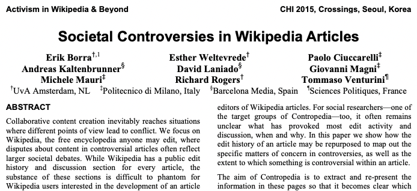
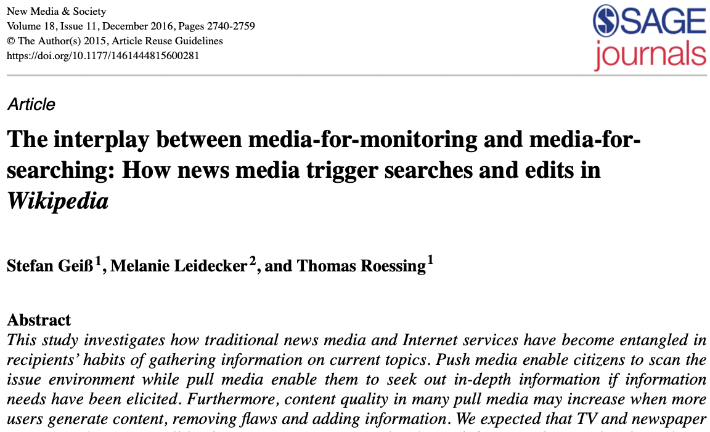

Literature review
We are basing our browser extension on several research papers.

Societal Controversies in Wikipedia Articles
Text
Borra, E., Weltevrede, E., Ciuccarelli, P., Kaltenbrunner, A., Laniado, D., Magni, G., Mauri, M., Rogers, R., & Venturini, T. (2015). Societal controversies in Wikipedia articles. Proceedings of the 33rd Annual ACM Conference on Human Factors in Computing Systems. https://doi.org/10.1145/2702123.2702436
The interplay between media-for-monitoring and media-for-searching: How news media trigger searches and edits in Wikipedia
Text
Gei, S., Leidecker, M., & Roessing, T. (2016). The interplay between media-for-monitoring and media-for-searching: How news media trigger searches and edits in wikipedia. New Media & Society, 18(11), 2740–2759. https://doi.org/10.1177/1461444815600281